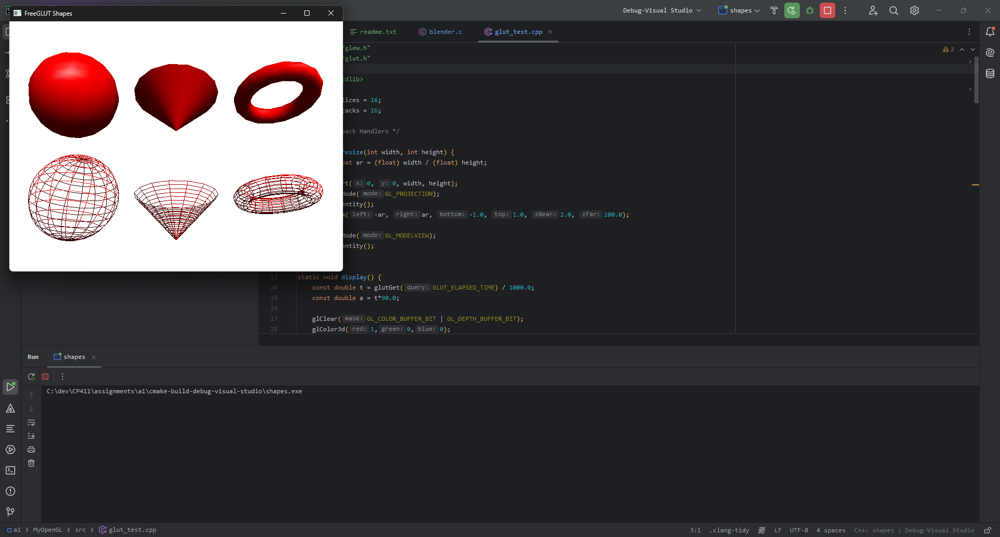

Fall 2024
Framebuffer: A memory block that stores data of all pixels of raster pattern line by line. Each dot of an image has a corresponding position in the memory, the value stored in the memory position represents the data, e.g. color, of the dot.
Color Depth: The number of bits taken by a pixel, typically 1, 8, 16, 24, 32, or 64 bits. Includes RGB, BGR, RGBA, ARGB, etc. color formats.
Resolution: The X by Y
dimensions of the output, typically the framebuffer or an output device such as an
LED display. The first number is the size of a row in pixels, and the
second number is the number of rows.
A frame refers to a full scan and display of image on screen.
Rasterization is the most commonly used graphics approach due to requiring orders of magnitude less processing power, which makes it preferable for the majority of graphics processing tasks.
The CPU does model computing. It sends graphic object model data (e.g., vertices of a triangle, textures, lights) to video memory and instructions to GPU.
The GPU processes object data, rasterizes (generates pixel data) and writes the pixel data to the framebuffer.
C/C++ are already installed, and eclipse is not being used. Instead I am using CLion and CMake.
CMake code for the basic cube example:
cmake_minimum_required(VERSION 3.29)
project(c_cube C)
set(CMAKE_C_STANDARD 11)
include_directories(C:/dev/CP411/include/)
link_directories(C:/dev/CP411/lib/Release/x64)
add_compile_definitions(NDEBUG)
add_compile_options(-DGLEW_STATIC)
add_executable(c_cube cube.c)
target_link_libraries(c_cube glew32s)
target_link_libraries(c_cube freeglut)
add_custom_command(TARGET c_cube POST_BUILD # Adds a post-build event
COMMAND ${CMAKE_COMMAND} -E copy_if_different # which executes "cmake - E copy_if_different..."
"C:/dev/CP411/bin/Release/x64/freeglut.dll" # <-- target to copy
$<TARGET_FILE_DIR:c_cube> # <-- this is the output path
)Output:
CMake code for the GLSL cube example:
cmake_minimum_required(VERSION 3.29)
project(cube)
set(CMAKE_CXX_STANDARD 20)
include_directories("C:/dev/CP411/include/")
link_directories("C:/dev/CP411/lib/Release/x64")
add_compile_definitions(NDEBUG)
add_compile_options(-DGLEW_STATIC)
add_executable(cube
example6.cpp
InitShader.cpp
)
target_link_libraries(cube glew32s)
target_link_libraries(cube freeglut)
add_custom_command(TARGET cube POST_BUILD # Adds a post-build event
COMMAND ${CMAKE_COMMAND} -E copy_if_different # which executes "cmake - E copy_if_different..."
"C:/dev/CP411/bin/Release/x64/freeglut.dll" # <-- target to copy
$<TARGET_FILE_DIR:cube> # <-- this is the output path
)
add_custom_command(TARGET cube POST_BUILD # Adds a post-build event
COMMAND ${CMAKE_COMMAND} -E copy_if_different # which executes "cmake - E copy_if_different..."
"C:/dev/CP411/examples/cube/vshader36.glsl" # <-- target to copy
$<TARGET_FILE_DIR:cube> # <-- this is the output path
)
add_custom_command(TARGET cube POST_BUILD # Adds a post-build event
COMMAND ${CMAKE_COMMAND} -E copy_if_different # which executes "cmake - E copy_if_different..."
"C:/dev/CP411/examples/cube/fshader36.glsl" # <-- target to copy
$<TARGET_FILE_DIR:cube> # <-- this is the output path
)Output:

For this, again CMake was used.

